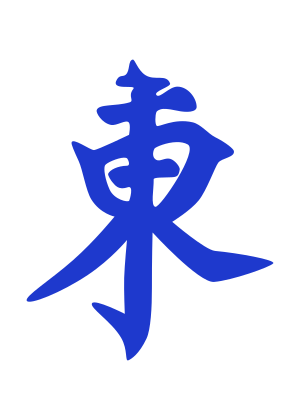
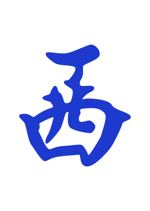

0 pts
Ronda Este
RONDA

11

11
1
APUESTAS
¢/pto
Cómo utilizar esta App
1Panel de Jugadores
Nombres: Edita la casilla de cualquier jugador. El de la ronda activa se resalta en verde y su viento (como ) determina el Viento Propio para el cálculo.
2Viento de Ronda
Muestra los vientos de ronda () que rotan automáticamente cada 4 manos. Para resetear el ciclo completo de rondas, mantén pulsado el botón rojo de reinicio (↺).
3Teclado de Fichas (Entrada)
Pulsa una ficha para añadirla. Haz una pulsación larga en el teclado para declarar grupos expuestos como Chi (secuencias) o Pong (tercias).
4Gestión del Tapete
Haz clic en una ficha para descartarla. Arrastra y suelta para ordenarlas libremente. Los Kongs y Flores se colocan en el tapete superior para mantener limpia la mano de 14 fichas.
5Modificadores de Victoria
Configura si es mano oculta () o expuesta ( ), y el origen de la victoria en la fila inferior: robo del muro (), descarte (), espera única () o doble (), última ficha () o robo de Kong ().
), y el origen de la victoria en la fila inferior: robo del muro (), descarte (), espera única () o doble (), última ficha () o robo de Kong ().
), y el origen de la victoria en la fila inferior: robo del muro (), descarte (), espera única () o doble (), última ficha () o robo de Kong (). 6Cálculo y Anotación
Al alcanzar las 14 fichas, el motor calcula los puntos (mínimo 8). Si es válida, pulsa el botón verde "+" al lado del total para registrar los puntos en el historial del jugador. Si te equivocas, puedes pulsar el botón verde de deshacer (↺) en los controles del panel de jugadores para revertir la última anotación.
7Sistema de Apuestas y Euros
• Equivalencia en Euros: Activa el modo ON para ver tus puntos convertidos a dinero real según la tasa configurada (ej. 0.10 €/Pto). Las tablas e historial reflejarán este cambio automáticamente.
• Puntos Base: Permite configurar una cantidad de puntos iniciales para los jugadores. Al pulsar +/- o editar la casilla, se ajustará el saldo inicial.
• Bloqueo (Candado): Usa el candado () para bloquear los ajustes de apuestas y evitar modificaciones accidentales en mitad de la partida.
• Puntos Base: Permite configurar una cantidad de puntos iniciales para los jugadores. Al pulsar +/- o editar la casilla, se ajustará el saldo inicial.
• Bloqueo (Candado): Usa el candado () para bloquear los ajustes de apuestas y evitar modificaciones accidentales en mitad de la partida.
8Estilo Black y Reglas Adicionales
En Configuración General, al activar el Estilo Black se aplican reglas especiales y estéticas premium:
• Doras 5 Rojo: Las fichas de 5 de bambúes, caracteres y círculos tienen una versión roja que añade +1 punto cada una.
• Muro Muerto: Habilita un mini tapete (máx 10 fichas). Si activas el botón DORA en el teclado, las fichas añadidas irán al Muro Muerto. Las primeras 5 son Dora y las 5 siguientes Ura-dora. Cada ficha de tu mano que coincida con una de ellas sumará +1 punto extra.
• Riichi (): Declaración de apuesta disponible solo para manos ocultas, añadiendo +3 puntos al total.
• Doras 5 Rojo: Las fichas de 5 de bambúes, caracteres y círculos tienen una versión roja que añade +1 punto cada una.
• Muro Muerto: Habilita un mini tapete (máx 10 fichas). Si activas el botón DORA en el teclado, las fichas añadidas irán al Muro Muerto. Las primeras 5 son Dora y las 5 siguientes Ura-dora. Cada ficha de tu mano que coincida con una de ellas sumará +1 punto extra.
• Riichi (): Declaración de apuesta disponible solo para manos ocultas, añadiendo +3 puntos al total.
9Panel de Sugerencias
Muestra sugerencias de combinaciones. Ahora está fijo en la parte inferior de la pantalla (sticky) y sus listas se despliegan hacia arriba para no ocultarse. Al pulsar el botón del dado (🎲) para obtener una mano aleatoria, los valores de los selectores ("Valor combinación" y "Combinación") se actualizan automáticamente para reflejar la combinación obtenida.
Acerca de esta App
Asistente oficial para el cálculo y registro de puntuaciones bajo el reglamento internacional de Mahjong MCR.
Cálculo Oficial WMO Valida patrones y aplica el principio de no duplicidad de forma automática.
Soporte Offline PWA Instálala como app nativa y utilízala en tu tableta sin necesidad de internet.
Guardado Automático Nombres, marcador y fichas se guardan localmente para evitar pérdidas.
Estadísticas Gráficas Gráfico de donut dinámico de puntos e historial completo por jugador.
Chuleta de Combinaciones MCR (PDF)
Resumen visual oficial con los 81 patrones válidos (Fans) y sus puntuaciones (de 1 a 88 puntos). Ideal para consulta rápida en juego.
Abrir Tabla de Manos MCR (PDF)Robo
Espera
Última
Última Tipo
Robo Kong
Riichi